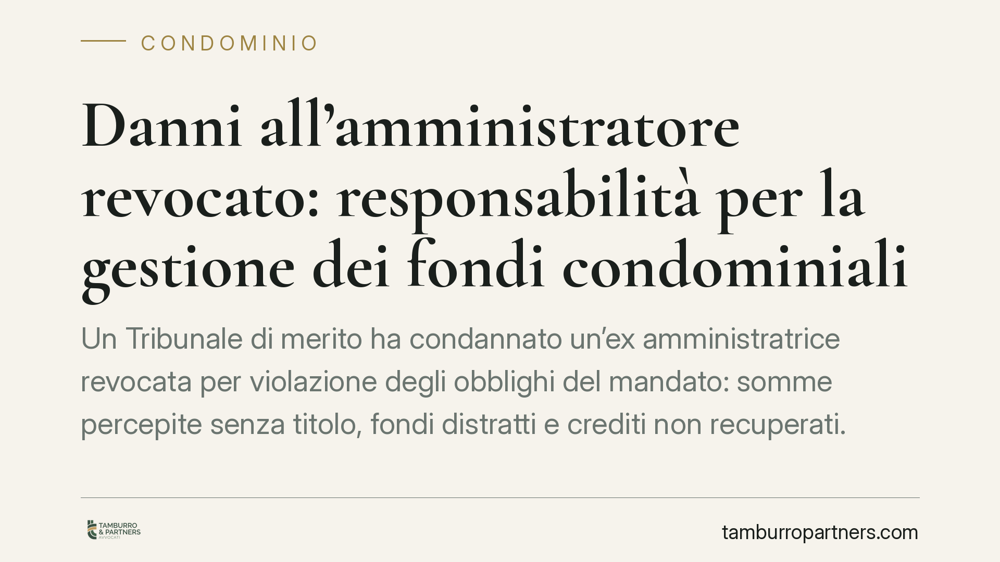

Danni all'amministratore revocato: responsabilità per la gestione dei fondi condominiali
Un Tribunale di merito ha condannato un'ex amministratrice revocata per violazione degli obblighi del mandato: somme percepite senza titolo, fondi distratti e crediti non recuperati. La pronuncia è utile per capire quando il condominio può agire e come viene liquidato il danno. Vediamo i profili tecnici e cosa fare in concreto.

Il caso
Un condominio ha agito in giudizio contro la propria ex amministratrice, revocata dall'incarico, chiedendone la condanna al risarcimento per il modo in cui aveva gestito le finanze condominiali.
Secondo la ricostruzione accolta dal giudice, l'amministratrice aveva percepito somme senza titolo, distratto fondi dalla cassa condominiale e omesso di attivarsi per il recupero di crediti verso condòmini morosi. Il Tribunale ha riconosciuto la responsabilità, rinviando però la quantificazione del danno a una fase successiva.
Nota di cautela: gli estremi esatti della pronuncia (numero, data e sezione) vanno verificati sulla fonte ufficiale prima di qualsiasi uso processuale. Qui ne trattiamo i principi giuridici, che restano validi a prescindere dalla singola decisione.
Inquadramento normativo
Il rapporto tra condominio e amministratore si qualifica, sul piano civilistico, come mandato. Da qui derivano gli obblighi di diligenza nell'esecuzione dell'incarico e di rendiconto.
Occorre però fare una precisazione tecnica spesso trascurata. L'art. 1710, comma 1, cod. civ. fissa per il mandato gratuito il parametro della diligenza del buon padre di famiglia. L'amministratore di condominio, quando opera dietro compenso e in forma professionale, non risponde secondo quel parametro attenuato: si applica la diligenza qualificata dell'art. 1176, comma 2, cod. civ., commisurata alla natura dell'attività esercitata.
In pratica, all'amministratore professionista si chiede la perizia di un operatore del settore, non quella dell'uomo medio. Questo innalza l'asticella della responsabilità: comportamenti che potrebbero essere tollerati in un incarico occasionale diventano fonte di danno se posti in essere da chi gestisce professionalmente i beni altrui.
È inoltre utile distinguere due profili di responsabilità, perché seguono logiche probatorie diverse:
- Prelievi indebiti e distrazione di fondi: qui il danno coincide, in linea di massima, con le somme sottratte o incassate senza titolo. La prova è documentale e il nesso causale è diretto.
- Omesso recupero dei crediti: il danno non è l'importo del credito in sé, ma la perdita effettiva derivante dall'inerzia (ad esempio la sopravvenuta prescrizione o l'insolvenza nel frattempo maturata). Serve dimostrare che un'azione tempestiva avrebbe avuto ragionevoli probabilità di successo.
La liquidazione del danno
Nel caso esaminato, il Tribunale ha affermato la responsabilità ma ha rinviato la quantificazione, valorizzando la valutazione equitativa prevista dall'art. 1226 cod. civ. Questa norma consente al giudice di liquidare il danno in via equitativa quando il suo preciso ammontare non può essere provato.
È una scelta ricorrente in materia: l'accertamento della condotta illecita può essere netto, mentre la misura esatta del pregiudizio richiede verifiche contabili complesse, rinviate a un momento successivo. Per il condominio significa che ottenere una condanna sull'an (il "se") non equivale ad avere subito liquidato il quantum (il "quanto").
Il nodo della mediazione obbligatoria
Un punto delicato riguarda la mediazione. Nel caso in esame, secondo la lettura accolta dal Tribunale, l'azione di responsabilità contro l'ex amministratore non rientrava tra le controversie soggette a mediazione obbligatoria ai sensi dell'art. 5 del D.Lgs. 28/2010.
Va detto con chiarezza: non si tratta di un principio pacifico. Parte della giurisprudenza ritiene invece che le azioni derivanti dal rapporto di mandato con l'amministratore ricadano tra le "controversie in materia di condominio" e debbano quindi passare per la mediazione, a pena di improcedibilità.
Consigliamo pertanto di non dare per scontata l'esenzione: valutare caso per caso, anche in via prudenziale, l'opportunità di esperire comunque il tentativo di mediazione, per evitare il rischio di una pronuncia di improcedibilità.
Implicazioni pratiche
Per il condominio, la pronuncia conferma che la revoca dell'amministratore non chiude i conti con la gestione passata. Se emergono irregolarità contabili, resta aperta la strada dell'azione risarcitoria.
Per l'amministratore, il messaggio è l'opposto: la gestione dei fondi altrui va documentata con rigore, perché il parametro di diligenza applicabile è quello professionale.
Cosa fare in concreto
- Acquisite tutta la documentazione contabile della gestione contestata: estratti conto, giustificativi di spesa, rendiconti e verbali assembleari.
- Verificate i giustificativi di ogni movimento: individuate prelievi privi di titolo, spese non deliberate e somme incassate senza causale.
- Ricostruite i crediti non recuperati, accertando se e quando sia maturata la prescrizione o l'insolvenza del debitore.
- Fate deliberare l'assemblea sull'avvio dell'azione e sul conferimento del mandato al nuovo amministratore o al legale.
- Valutate il tentativo di mediazione in via prudenziale, vista l'incertezza sull'esenzione dalla condizione di procedibilità.
---
Contributo informativo a cura di Tamburro & Partners - Avv. Giuseppe Tamburro. Non costituisce parere legale.
Ogni condominio ha una storia a sé.
Se gestisci un'amministrazione e vuoi un confronto su una specifica questione condominiale, scrivi allo studio. Ti rispondiamo entro un giorno lavorativo.